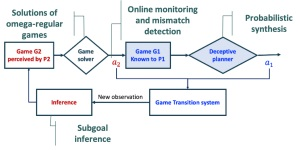

To carry out tasks in an adversarial environment, the information (or the lack of information) plays a key role in strategic decision-making. In recent work, we developed a class of hypergames on graphs for modeling the adversarial interactions between an intelligent robot and its adversary, given the task specification in temporal logic and asymmetric information. We investigate the solution concepts of hypergames to design deceptive strategies that ensure to achieve the mission with provable guarantees. The concept of game-theory for deception and counter-deception has important applications in military operations, contested search and rescue, and the synthesis of secured cyber network systems (including industrical control system and other networks) using deception mechanism.